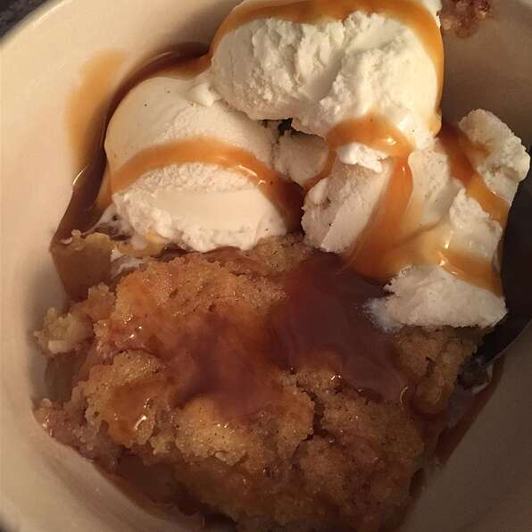

Apple Pudding

Description
A nice dessert for all!
Ingredients
- 1/2 cup butter, melted
- 1 cup white sugar
- 1 cup all-purpose flour
- 2 tsp baking powder
- 1/4 tsp salt
- 1 cup milk
- 2 cups peeled chopped apples
- 1 tsp ground cinnamon
Steps
- Preheat oven to 375 degrees F (190 degrees C).
- In a small baking dish, combine butter, sugar, flour, baking powder, salt, and milk until smooth.
- In a microwave-safe bowl, combine apples and cinnamon. Microwave until apples are soft, 2 to 5 minutes. Pour apples into the center of the batter.
- Bake in the preheated oven 30 minutes, or until golden.